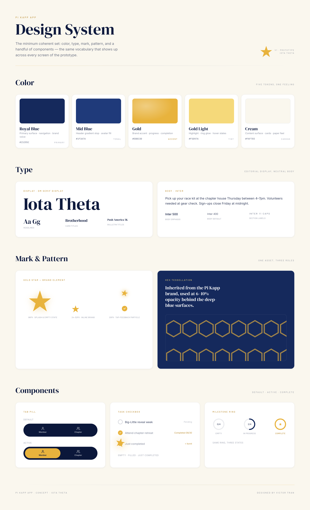
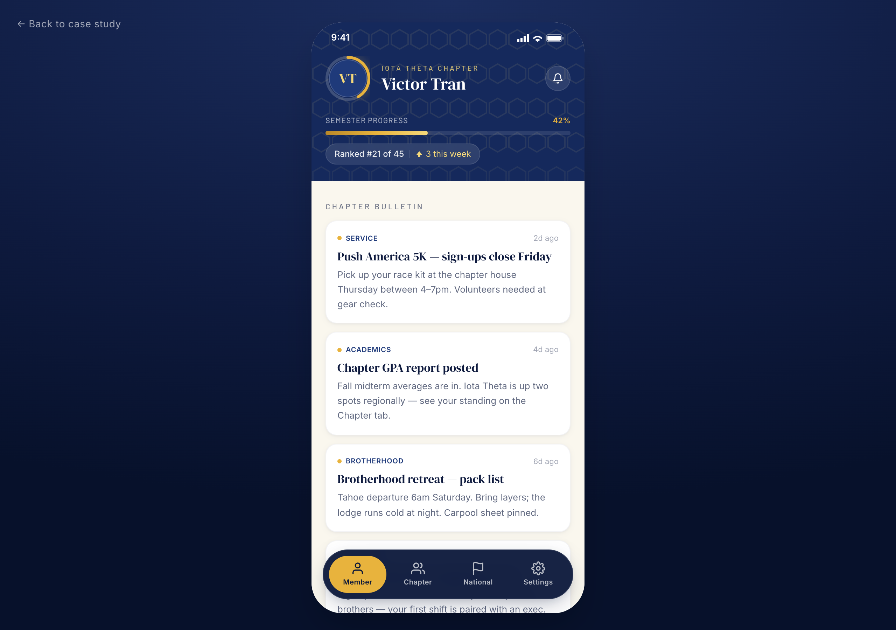
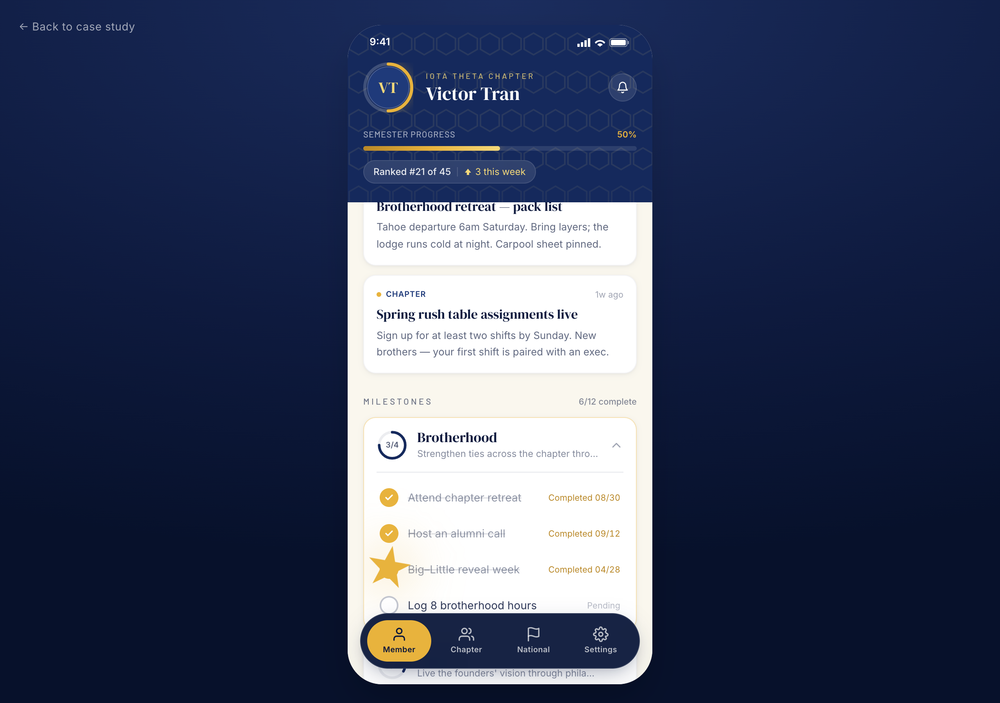
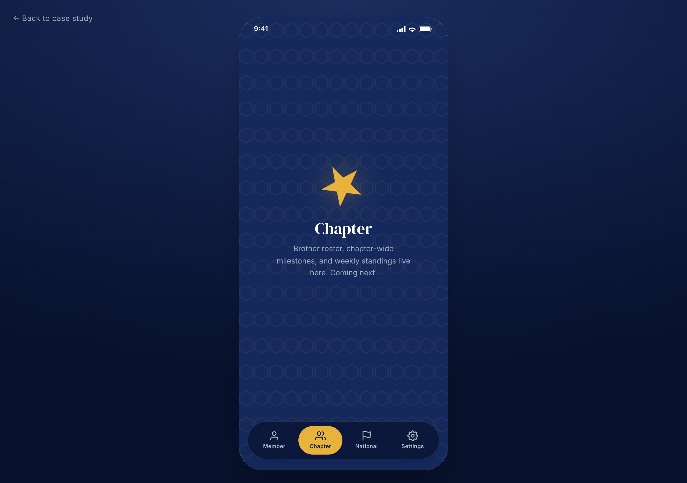

Design
Pi Kapp App
A mobile application concept for undergraduate fraternity members to track milestones and stay connected with their organization.
A native mobile concept for a brotherhood that didn't have one. Built to serve a freshman tracking first milestones and a senior running a chapter, inside the same flow.
Concept · Pi Kappa Phi
Three users, one flow
An app for a brotherhood that didn't have one, sharing a single flow across very different members.
Pi Kappa Phi is a national fraternity with collegiate members spanning a four-year arc. The concept needed to land for three distinct users without splintering into three apps:
- A freshman just starting rush, tracking their first milestones.
- A junior on the executive board running chapter responsibilities.
- A graduating senior closing out capstone classes.
Two constraints shaped everything that followed. The visual system had to inherit the existing brand: deep blue, gold star, the tessellated hex pattern that runs through the print materials. And the data layer had to plug into iMIS, the national member database, so the app could pull rank, term, and chapter assignment without duplicating records.
02 · Mapping the flowWireframes & information architecture
Hand sketches first, then a sitemap that pinned down the four-tab shell.
Research looked at apps that turn long-arc goals into short-loop motivation: progress bars, ranked completion percentages, and term-bounded streaks. The pattern that translated cleanest to a fraternity context was a per-term progress bar paired with a ranking against the chapter. Visible to the member, comparable across peers, and explicitly time-bounded so it resets each semester.
The sitemap settled on a four-tab shell: Member (your dashboard), Chapter (your house), National HQ (Pi Kapp at large), and Settings. Same shell for everyone; what changes is the density of what's already done.


Inheriting the system
The brand was set. The job was making it feel like an app, not a printed brochure.
The login and welcome screens lean on Pi Kappa Phi's existing visual system. Form fields, button shape, and bottom navigation are the only places where the app gets to add new vocabulary; everything else inherits. The hex pattern softens behind the splash, the gold star becomes the loading mark, and the deep blue carries the chrome on every screen.


The system that came out of that work — color, type, mark, pattern, and the handful of components everything else is built from — codified the inherited brand into a working vocabulary. Five tokens, one feeling.

Where the value lives
A progress bar and a ranked percent — the loop a member opens the app to see.
The Member screen is home base: full-term progress, completion percentage, current rank against the chapter (21/45 in the mock), and the bulletin feed below. Tapping a milestone opens its task list, with one task expanded inline showing description and due date; siblings stay collapsed until tapped. Progressive disclosure keeps the dashboard from buckling under a term's worth of detail.
This is the flow that has to work for all three personas. A freshman with two completed tasks and a senior with twenty both land on the same screen. The hierarchy is what changes.


When the static screen becomes a real artifact
The comp held the design language. The prototype tested whether it held under interaction.
A high-fidelity comp answers what something looks like. It can't answer what it feels like to use. So I rebuilt the Member dashboard as a working concept — single-file React with Tailwind and Framer Motion — to test whether gold-on-blue stayed legible at thumb scale, whether the milestone expand felt like progress instead of a state change, and whether the gold star earned its keep as something more than a mark.

The polish moments are where the brand stops being decoration and starts being function. The avatar gets a thin gold progress ring that reflects the semester at a glance. Tab switching uses spring physics, not ease-in-out — the difference between premium and templated almost always lives in the motion curve. Checking off a task pops a single gold star particle that scales, lifts, and fades. Same star that loads the splash. Same star that sits at the center of every empty state. One asset, three jobs.


What the prototype clarified — beyond what any flat comp could — was that the system had room to breathe. The same five tokens that built the splash also built the empty state, the tap feedback, and the progress ring. The brand wasn't a decoration layer applied at the end; it was the structure underneath.
Live concept Try the prototypeWhat the concept clarified
A constrained brand system was a frame, not a ceiling. The harder question was hierarchy: how to surface enough of the long-arc journey to motivate a freshman, without overwhelming a senior who's already most of the way through. The answer wasn't different screens for different users. It was the same flow, ranked.